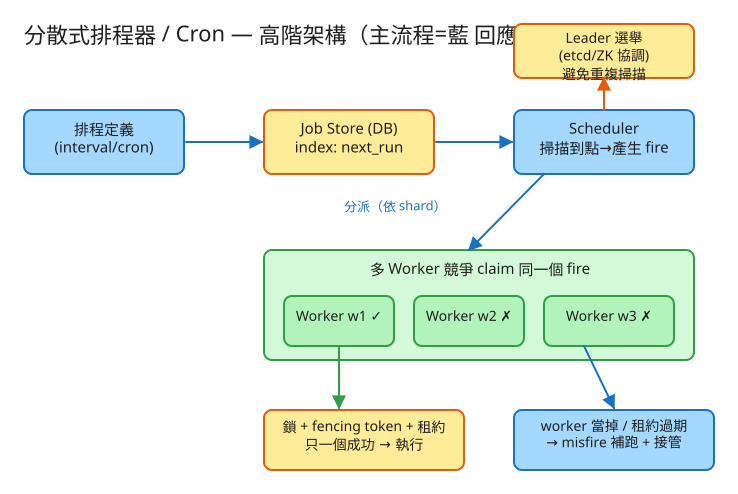

㊷ 分散式排程器 / Cron · 初學者友善版
M 排程/工作流
看故事就懂
輕鬆讀 25 分鐘
🧠 這份怎麼讀？
這份用「大腦比較好吸收」的方式重寫：先講生活比喻 → 把系統拆成小關卡 → 邊讀邊考自己。
分成兩部分：Part 1 概念（這系統在幹嘛）、Part 2 工程細節（怎麼真的蓋出來，一樣白話）。
遇到 💭 停一下 就先自己想 3 秒再往下看——這叫「提取練習」，比一直往下滑記得更牢。
1. 60 秒搞懂它在幹嘛
你手機上有鬧鐘對吧？「每天早上 7:00 響」「每 5 分鐘提醒喝水」。
電腦世界也需要這種鬧鐘——叫它「定時任務」：每天半夜 2 點寄報表、每小時備份一次、每週一發帳單。
一台電腦自己管鬧鐘很簡單（Linux 上叫 cron）。但當你有上億個鬧鐘、一台電腦扛不住，
就得很多台電腦一起管。麻煩來了：同一個鬧鈴響時，到底誰去執行？萬一兩台都去做，任務就跑了兩次（帳單寄兩封、錢扣兩次）。
🔑 一句話
分散式排程器 = 一大群電腦共用的鬧鐘系統：在對的時間，把對的任務，剛剛好觸發一次（不重複、不漏掉），而且機器再多也撐得住。
2. 為什麼「多台一起跑」反而麻煩？
很多人想：「不就是設鬧鐘嗎？有什麼難的？」難就難在——很多台機器，每台都看到了同一個鬧鐘。
🛏️ 宿舍裡的鬧鐘
想像一間宿舍住了 4 個人，每個人手機都設了同一個 7:00 的鬧鐘（怕睡過頭）。
7:00 一到，4 支手機同時響——但「去關掉鬧鐘、去煮早餐」這件事，只該有一個人去做，
不然 4 個人都跑去廚房，煮了 4 鍋粥。
定時任務也一樣：很多台機器都「看到鬧鈴響了」，但這個任務只能讓一台去執行。
於是核心問題變成：「大家都想做，怎麼讓只有一個人做？」
解法就是現實中的老招——搶。誰先搶到「我來做」這個資格，誰就做；其他人看到「已經有人搶走了」就乖乖退下。
這個「搶資格」的動作，工程上叫 claim（認領）/ 搶鎖。
💭 停一下：宿舍 4 個人怎麼確保「只有一個人去煮早餐」，又不會吵架？
看答案
在廚房門口貼一張紙，第一個到的人把名字寫上去。後面來的人看到「已經有名字了」就回房間。
關鍵是「寫名字」這個動作要夠快、夠原子（不能兩個人同時都覺得自己是第一個）。系統裡這張紙就是資料庫的一筆紀錄，「寫名字」就是一個原子操作：只有第一個寫成功的人算數。
3. 把系統拆成 4 個關卡
別被「分散式」嚇到。整件事就是闖 4 關，一關一關來：
1登記鬧鐘：「我要每天 2 點做這件事」
使用者先告訴系統：什麼時候響、響了要做什麼。時間可以是「每 5 分鐘」這種固定間隔，
也可以是 cron 表達式（一種寫法，例如 */5 * * * * 代表「每 5 分鐘」、0 2 * * * 代表「每天 2 點」）。
⏰ 比喻就像在手機鬧鐘 App 裡新增一個鬧鐘：選時間、設「重複」、寫上備註（響了要幹嘛）。系統把這些記在一本「鬧鐘簿」裡。
2看時間：「現在有哪些鬧鐘該響了？」
系統要不斷地問：「現在幾點？有哪些鬧鐘的時間 ≤ 現在？」到點的就把它撈出來。
📋 比喻：看待辦清單，挑出「到期」的
你不會把整本行事曆從頭翻到尾找今天該做的事（太慢）。你會直接看「排在最前面、時間最早」的那幾筆，到期了就拿出來做。
系統也一樣：鬧鐘簿按「下次響的時間」排好序，每次只看最前面、已經到點的那幾個，不必每次都掃過上億筆。
3搶著做：「這個鬧鈴歸我！」（防重複的核心）
到點的鬧鐘被很多台機器同時看到。這時就靠關卡 2 開頭講的「搶」：誰先把「我來做」寫上去，誰就做，其他人退下。
🧹 比喻：值日生輪班表
教室的值日生表上，每天只有一個名字。輪到的那個人去掃地，其他人不用動。
如果兩個人同時跑去掃，不只浪費力氣，還可能把剛掃好的弄亂——所以「同一個工作只能一個人認領」很重要。
這就是整題最重要的一句話：很多台機器都有鬧鐘，但同一個鬧鈴只能一台去執行。
這個機制叫 claim（認領）/ 搶鎖，目的是防止同一個任務跑很多次（不然帳單寄好幾封、錢扣好幾次就出大事了）。
4有人睡過頭：補做還是算了？（misfire 補跑）
萬一負責的那台機器當掉了、睡過頭了，這個鬧鐘就被錯過了。系統發現後要決定：要不要補做？
😴 比喻：值日生請假了
值日生今天感冒沒來，地沒掃。你有三種選擇：
① 補掃一次就好（不管欠幾天，補一次乾淨即可）
② 算了，跳過（反正明天還要掃，今天就不計較）
③ 欠幾天補幾天（每一天都不能少，例如每天的帳一定要結）
系統把這三種叫 misfire 策略（misfire = 錯過了該觸發的時刻）：fire-once（補一次）、skip（跳過）、fire-all（全補）。
選哪個要看任務性質——「寄日報」補一次就好；「每分鐘清快取」跳過就行；「每小時結算」一筆都不能少。
✅ 四關一句話
① 登記鬧鐘 → ② 看時間挑出到點的 → ③ 多台機器搶著做、只一台中（claim 防重複）→ ④ 有人睡過頭就依策略補跑（misfire）。就這樣。
4. 設計時最怕的 3 件事
工程上的「取捨」聽起來很抽象。換個方式記：這個系統最怕三件事，每個設計都是為了避開某個「怕」。
😱 怕「做兩次」
同一個任務跑兩次 = 帳單寄兩封、錢扣兩次、報表寄重複。所以「只做一次」是頭號目標：
靠「搶鎖（claim）」讓多台機器中只有一台能做。實務上做不到 100% 精確一次，所以再加一招——讓任務本身重複做也沒差（這叫「冪等」）。寧可重複也要擋住，擋不住就讓重複無害。
😱 怕「漏掉沒做」
機器當掉、重啟，不能就把該做的事吞掉。所以鬧鐘要寫進硬碟（持久化），機器復活後能發現「啊我錯過了」，
再依 misfire 策略決定補不補。機器可以掛，任務不能消失。
😱 怕「殭屍復活搶著做」
最陰險的情況：一台機器搶到了任務，做到一半卡住了（網路斷、當機），系統以為它死了，叫別人接手。
結果它突然又活過來，繼續做它的——變成兩台同時在做！解法是發一個號碼牌（fencing token），
號碼只會越來越大；下游只認「最新的號碼牌」，舊的殭屍拿著過期號碼牌想做事，會被擋下來。
5. 一張圖看懂

✏️ 用 Excalidraw 開啟編輯（diagram.excalidraw）
白話導讀，由上到下一路看：
- 📒 鬧鐘簿（Job Store / DB）記著所有鬧鐘和「下次幾點響」 →
- 👀 掃描員（Scheduler）一直看時間，挑出「該響了」的鬧鐘，產生一筆「觸發單」 →
- 🏃 一群工人（Worker）搶這張觸發單，只有一個搶到（claim），拿到號碼牌後去執行 →
- 💥 萬一搶到的工人當掉、租約到期，另一個工人會接手重做（換更大的號碼牌，擋住殭屍）。
🪧 為什麼要先選一個「掃描員」？
如果每台機器都去掃整本鬧鐘簿，會重複產生一堆觸發單（雖然搶鎖會擋掉重複，但很浪費）。
所以大家先選一個「值班掃描員」（leader 選舉）負責看時間，其他人專心當工人就好。掃描員掛了，再選一個補上。
6. 名詞白話翻譯
看完上面，這些詞你其實都已經懂了，這裡只是把「工程術語 ↔ 白話」對起來，Part 2 會用到：
| 工程術語 | 白話解釋 |
|---|
| cron / 定時任務 (job) | 電腦的「鬧鐘」：到時間自動做某件事 |
| cron 表達式 | 寫鬧鐘時間的格式，例如 0 2 * * * = 每天 2 點 |
| next_run（下次觸發） | 這個鬧鐘「下一次該響」的時間 |
| fire（觸發 / 觸發單） | 某個鬧鐘「這一次到點」產生的一張工作單 |
| claim（認領 / 搶鎖） | 「這個我來做」——搶資格，只有一台搶得到 |
| 冪等 (idempotent) | 同一件事做幾次，結果都一樣（重複做也無害） |
| misfire（補跑） | 睡過頭錯過了：要補一次 / 全補 / 還是跳過 |
| fencing token | 越發越大的「號碼牌」，用來擋住復活的殭屍機器 |
| 租約 (lease) | 「我借用這任務到幾點」，到期沒完成就讓別人接手 |
| 分片 (shard) | 把很多鬧鐘分給好幾組機器，各管一份、分擔負載 |
| leader 選舉 | 大家先推一個「值班掃描員」，避免每台都重複掃 |
| at-least-once | 「至少觸發一次」：寧可重觸發也不漏，再靠去重收尾 |
🛠️ Part 2 ｜ 工程細節（一樣白話）
概念懂了，來看「真的要動手蓋，得想清楚哪些事」。一樣用比喻，不用怕。
7. 要準備多大？（規模估算）
🍱 比喻：辦活動前先估人數
辦活動前，你會先估「大概來幾個人」，才決定訂幾個便當、租多大場地。
系統設計也一樣：先估數字，才知道要準備多大的「料」。這一步叫規模估算。
我們估幾個關鍵數字（數字不必背，重點是感受它的「形狀」）：
| 估什麼 | 大概數字 | 所以呢？ |
|---|
| 總共有幾個鬧鐘 | 1 億個 job | 不能每次都把整本簿子翻一遍，要靠索引 |
| 每秒要響幾次 | ≈ 2.8 萬次/秒（尖峰再 ×3） | 一台機器響不完，要很多台分擔 |
| 要幾個工人 | 一個工人每秒做 ~500 次 → 約 56 個工人 | 尖峰時要能加到上百個 |
| 執行紀錄要留多久 | 每次都記一筆，留 30 天 → 幾百億筆 | 太多了，要定期清掉舊的、用專門的「流水帳資料庫」 |
🕛 關鍵洞察：整點大家一起響
很多人都愛把鬧鐘設在「整點」「半夜 12:00」「凌晨 2:00」。結果同一秒幾百萬個鬧鐘一起響，瞬間把系統壓垮——
這叫「驚群（thundering herd）」，像演唱會散場大家擠同一個出口。
解法：給每個鬧鐘加一點隨機抖動（你 2:00:03 響、我 2:00:07 響），把尖峰攤平。
💭 停一下：為什麼瓶頸不在「執行任務」，而在「找出該響的鬧鐘」和「搶鎖」這兩件事？
看答案
執行任務（寄信、呼叫網址）可以無限加機器分擔，不難。難的是：① 從 1 億個鬧鐘裡每秒找出到點的那些——掃太慢就會延遲；② 同一個鬧鈴一堆機器搶——搶得不好就會重複執行或卡死。所以設計的重心放在「高效掃描 + 可靠搶鎖」這兩點。8. 系統之間怎麼溝通？（API）
🍔 比喻：點餐單
API 就是兩個系統之間講好的「點餐單格式」：你要點什麼（給我哪些欄位）、我回你什麼。
講好格式，雙方就能合作，不用知道對方廚房怎麼運作。
這題只要記住幾張「點餐單」：
① 新增一個鬧鐘
POST /api/v1/jobs
給我：{ 名稱, 排程("*/5 * * * *"=每5分鐘), 響了要做什麼(打哪個網址), 補跑策略 }
我回：201「建好了！下次 02:05 響」
「補跑策略」就是 Part 1 關卡 4 講的：睡過頭要補一次、全補、還是跳過。建鬧鐘時就先講好。
② 改 / 暫停 / 刪鬧鐘
PATCH /api/v1/jobs/{id} → { "paused": true }（先暫停不響）
DELETE /api/v1/jobs/{id} → 刪掉這個鬧鐘
③ 查下次幾點響、查歷史
GET /api/v1/jobs/{id} → { 下次響, 上次響, 狀態 }
GET /api/v1/jobs/{id}/runs → 歷次執行紀錄（哪個工人做的、結果）
④（內部用）工人認領一張觸發單 ← 防重複的核心
POST /internal/claim 給我：{ 觸發單編號, 工人編號 }
我回：200 { ok:true, 號碼牌:4711, 租到幾點 } ← 搶到了！
我回：409 { ok:false, 原因:"已被別人搶走" } ← 沒搶到，退下
這張 ④ 就是整題的靈魂：多台工人搶同一張單，只有一台收到 200，其他都收到 409。回 200 的同時發一張「號碼牌」（fencing token），這就是擋殭屍用的。
9. 系統要記住哪些事？（資料模型）
📒 比喻：三本筆記本
系統要把資料記在「筆記本」（資料表）裡。這題只要三本：
⏰鬧鐘簿 jobs（有哪些鬧鐘）
每個鬧鐘一列：編號、排程寫法、下次響的時間(next_run)、補跑策略、是否暫停、分到哪一組(shard)。
為什麼 next_run 要建索引？
因為每秒都要問「哪些鬧鐘的下次響時間 ≤ 現在」。對這一欄建索引，就像幫整本簿子按時間排好序、加上書籤，一翻就找到最前面到點的那幾筆，不用每次掃 1 億列。
🎫觸發單簿 fires（每次到點產生一張，搶鎖的對象）
每次某鬧鐘到點，就生一張單：觸發單編號、屬於哪個鬧鐘、邏輯上該響的時刻、被誰認領了(NULL=還沒人)、號碼牌(fence_token)、租到幾點、狀態。
為什麼要這本？這是去重的根
搶鎖必須有「一個明確的搶奪對象」。把 (鬧鐘編號 + 該響的時刻) 設成不可重複，
多台工人都想搶同一張時，資料庫的「不可重複」規則 + 條件更新，自然只讓一台成功——這就是「只做一次」的根。
📝執行紀錄簿 runs（做了沒、結果如何）
每執行一次記一筆：哪張觸發單、哪個工人做的、幾點做的、結果、當時的號碼牌。
這本寫得超頻繁（每次觸發都寫），所以要定期清掉舊的，或用專門記流水帳的資料庫（時序庫）。
10. 哪裡會塞車、怎麼拓寬？（擴展）
🚗 比喻：找出塞車路段，拓寬它
系統變大時，總有某個環節會先「塞車」。工程師的工作就是找出最會塞的地方，把它拓寬。一個一個看：
| 哪裡會塞車 | 怎麼拓寬 |
|---|
| 1 億個鬧鐘，每秒找「該響的」太慢 | 對「下次響時間」建索引，每次只撈最前面 N 筆；再分片給好幾組分頭找 |
| 整點幾百萬個鬧鐘同時響（驚群） | 每個鬧鐘加隨機抖動錯開幾秒、限流，把尖峰攤平 |
| 某個任務跑很久，租約到期被別人接手 → 重複跑 | 長任務拆小、做到一半主動續租（像續借圖書）、任務做成冪等 |
| 同一批觸發單，一大群工人擠著搶（搶鎖熱點） | 分片讓各組只搶自己那份，降低競爭；一次搶一批 |
| 執行紀錄寫到爆 | 批次寫、用時序庫、定期清掉過期紀錄 |
| 掃描員一台不夠 / 掛了 | 分片 + leader 選舉：每片一個值班掃描員，掛了自動補位 |
11. 還有哪些「魚與熊掌」？（取捨）
「Part 1 的三個怕」是核心取捨。這裡補幾個常被面試官追問的：
⚖️ 精確一次 vs 至少一次
「保證剛好做一次」在分散式裡幾乎做不到（網路、當機隨時發生，成本超高）。務實答案是：至少觸發一次（at-least-once）＋ 任務本身冪等／用號碼牌去重。面試講出這句就穩了。
⚖️ 絕對準時 vs 一定會做
要分秒不差很貴；務實是允許延遲幾秒，但保證最終一定會觸發（不漏）。準時和不漏，先保不漏。
⚖️ 一個掃描員 vs 分片多個
只用一個值班掃描員：簡單，但量大會撐不住。分成好幾片、每片一個掃描員：能擴展，但機器增減時要重新分配（rebalance），交界處可能短暫重複——沒關係，靠搶鎖去重兜底。
💭 追問：工人做到一半當掉，任務怎麼辦？
它的「租約」會到期。系統發現租約過期沒人續，就判定它掛了，讓別的工人重新認領（拿一張更大的號碼牌）。萬一原工人是假死、後來又活過來，它拿的是舊號碼牌，下游只認最新的，所以擋得住——這就是 fencing token 的作用。💭 追問：整點一堆任務同時到點（驚群）怎麼解？
給每個任務的觸發時間加一點隨機抖動（jitter），例如本來都 2:00:00，改成散在 2:00:00～2:00:30，把尖峰攤平；再加上限流（令牌桶）控制每秒最多觸發幾個。12. 動手玩玩看
讀十遍不如玩一遍。這題有一個真的可以跑的小程式，讓你親眼看到「到點觸發 + 搶鎖 + 補跑」：
# 啟動（在這題的 demo 資料夾裡）
cd demo
php -S localhost:8042 -t public
# 然後瀏覽器打開 http://localhost:8042
- 先「加一個 job」（等於設一個鬧鐘，例如每 2 個 tick 響一次）。
- 讓幾個 worker 上線（多幾個搶鎖才看得出效果）。
- tick 推進（手動讓時間往前走），看哪些 job 到點、產生觸發單。
- 觀察：同一張觸發單，只有一個 worker 認領成功，其他都被擋掉（這就是 claim 去重）。
- 把認領中的 worker 下線，再 tick 過租約時間，看任務怎麼被接管、補跑（misfire）。
誠實小提醒
因為 PHP 沒有跨請求的常駐計時器，這個 demo 用「手動 tick 推進」來模擬時間走動。但其中最關鍵的搶鎖去重（claim + 號碼牌 + 租約到期）、misfire 補跑、分片指派都是真的可執行邏輯，不是假動畫——這些正是這題的考點。
13. 考考自己
先不要看答案，自己用講給朋友聽的方式回答看看（講得出來才是真的懂）：
Q1：用「宿舍鬧鐘」解釋，為什麼多台機器一起跑會有麻煩？
宿舍 4 個人都設了同一個 7:00 鬧鐘，同時響；但「去煮早餐」只該一個人做，不然煮了 4 鍋粥。多台機器都看到同一個鬧鈴響了，但任務只能讓一台執行——這就是核心難題。Q2：什麼是 claim（搶鎖）？為什麼非有不可？
claim = 「這個我來做」的搶資格動作，只有第一個搶到的機器能執行，其他看到「已被搶走」就退下。沒有它，同一個任務會被多台同時執行——帳單寄好幾封、錢扣好幾次。Q3：misfire 是什麼？三種補跑策略各舉一例。
misfire = 負責的機器當掉/睡過頭，錯過了該觸發的時刻。三種策略：fire-once 補一次（寄日報漏了補一次即可）、skip 跳過（每分鐘清快取，補了沒意義）、fire-all 全補（每小時結算，每筆都不能少）。Q4：「分片」在做什麼？用值日生比喻說說看。
分片 = 把很多鬧鐘分給好幾組機器，各管一份。像把全班分成幾組，每組負責自己的值日表，分擔工作，也減少大家擠著搶同一張表的情況。Q5（工程）：多台 worker 搶同一張觸發單，系統怎麼保證只有一個成功？
把 (鬧鐘編號 + 該響的時刻) 設成資料庫裡「不可重複」的鍵，用原子的條件更新（只在「還沒人認領」時把自己名字寫上去）。資料庫保證只有第一個寫成功、影響到 1 列的 worker 算認領成功，其他都失敗（回 409）。Q6（工程）：什麼是 fencing token（號碼牌）？它擋掉什麼災難？
fencing token 是認領時發的、只會越來越大的號碼。它擋的是「殭屍 worker」：一台 worker 卡住被判死、任務被別人接手後，它突然復活還想繼續做——但它拿的是舊號碼牌，下游只認最新（最大）的，舊的被拒絕，於是不會變成兩台同時做。Q7（工程）：為什麼要先「選一個 leader 掃描員」，而不是每台都掃？
如果每台 scheduler 都掃整本鬧鐘簿，會重複產生一堆觸發單，雖然搶鎖會去重但很浪費。用 leader 選舉讓同一片只有一個在掃描；leader 掛了，租約過期後其他人自動補位。14. 30 秒回顧
分散式排程器 = 一大群電腦共用的鬧鐘系統，在對的時間把對的任務剛好做一次。
4 個關卡：① 登記鬧鐘 → ② 看時間挑出到點的 → ③ 多台搶、只一台中（claim 防重複）→ ④ 睡過頭依策略補跑（misfire）。
3 個怕：怕做兩次（搶鎖 + 冪等）、怕漏掉（持久化 + misfire 補跑）、怕殭屍復活搶著做（fencing 號碼牌）。
工程細節一句話：先估「整點驚群」般的尖峰 → 用「點餐單(API)」溝通、內部 claim 單回 200/409 → 三本筆記本（鬧鐘/觸發單/紀錄）＋ next_run 建索引 → 找出塞車環節（掃描、搶鎖熱點、驚群）各自拓寬。
想看更精簡、面試速查用的版本？👉 前往完整版（同樣內容的工程速查格式）。